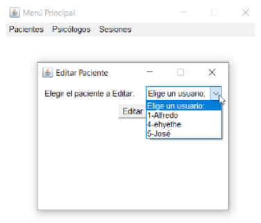
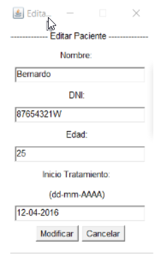
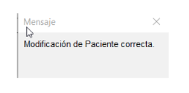

Para modificar la información guardada sobre un elemento, en el menú, debemos hacer click en la tabla indicada y en 'Modificar'. Se abrirá la siguiente ventana. Debemos elegir el elemento que queremos modificar y pulsar el botón 'Editar', Si todavía no hemos seleccionado ningún elemento, el botón no hará nada al pulsarlo.
Una vez pulsado 'Editar' con un elemento seleccionado, se abre la siguiente ventana. En esta se nos presenta la información guardada en cada campo. Si queremos modificar la información de uno de los campos, debemos escribir la información nueva en dicho campo y pulsar el botón 'Modificar'. Si algún campo esta vacío, aparecerá un mensaje de error. De la misma forma, el programa dará error si en algún campo no se introduce un valor aceptado. Aparecerá un mensaje si la modificación es exitosa o errónea.
 